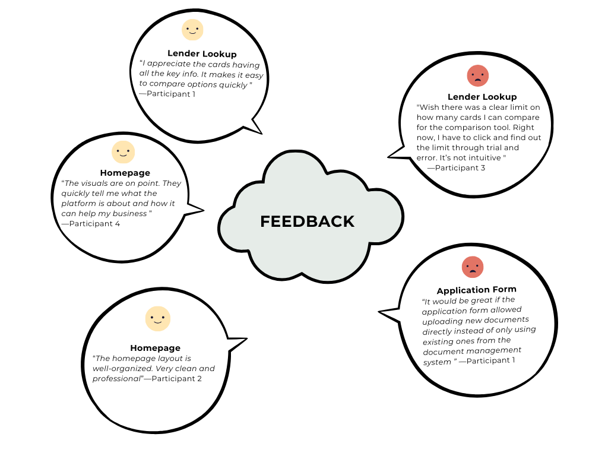
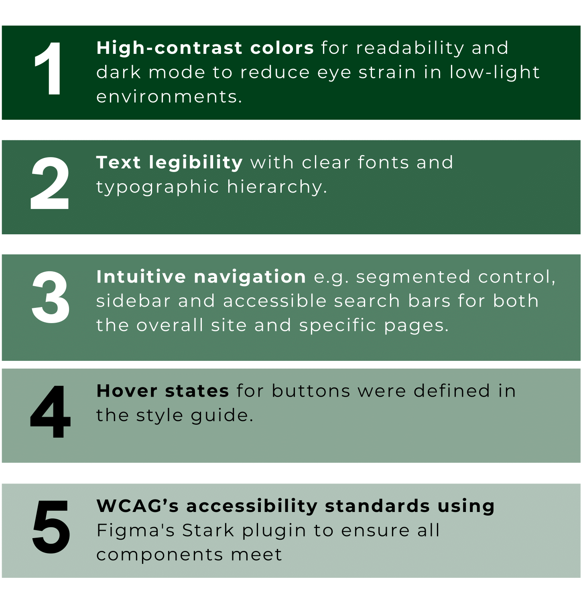
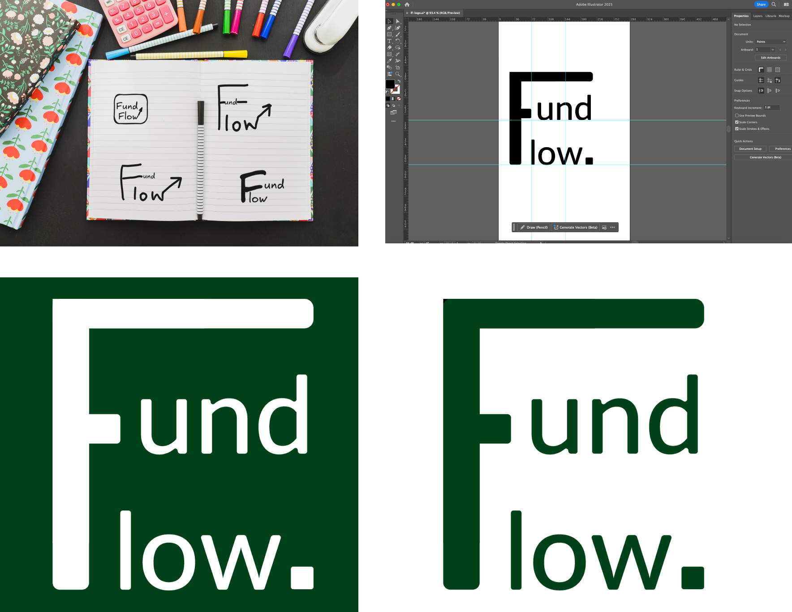
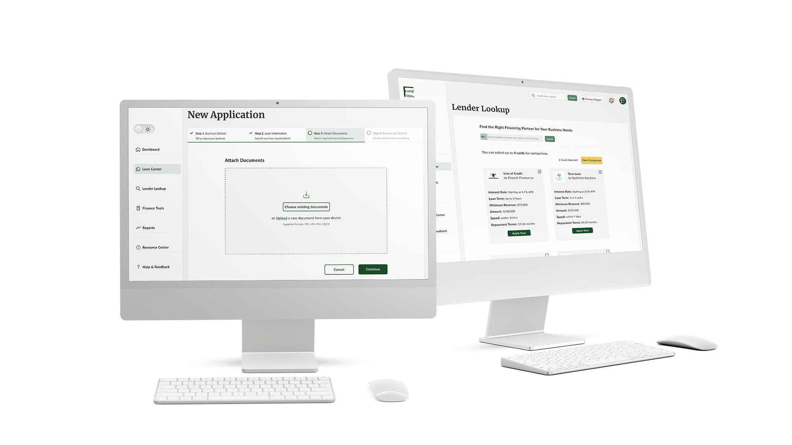

Sizing Up the Competition
I conducted a competitive analysis to uncover industry standards, effective features, and gaps where Fund Flow could better support small businesses in securing financial aid.
Scroll inside the container to explore competitive analysis.
Biases in Borrowing
I also reviewed reports on small business loan experiences, focusing on the challenges marginalized owners face, scam tactics complicating loan access, and prevalent online lender practices that often increase costs and barriers for small businesses.
Here are the key findings:
Beyond the Numbers
I carried out user interviews with five small business owners to understand their financing challenges. Here’s what the data revealed:
- Complex & Frustrating Applications: Participants felt the loan application process, whether online or with banks, was overly complicated. They wanted something simple and straightforward.
- Lost in Loan Tracking: Keeping track of repayments and due dates was a common pain point. A clear, organized dashboard with reminders would make their lives easier.
- Inaccurate Calculators: Users found existing loan calculators unreliable. They needed a tool that gives them accurate numbers tailored to their business.
- Help Me See the Future: Some participants wanted better ways to forecast their financial health and manage repayments, especially when business is unpredictable. An integrated financial tool could solve this.
Meet the Small Business Owners
I then created user personas to deepen my understanding of small business owners’ pain points and needs.
Unpacking the Loan Labyrinth
Building on these insights, I created 3 user journey maps to highlight the emotional ups and downs small business owners experience during the loan process.
Scroll inside the container to explore the user journey maps.
User Flow
I created a user flow chart in FigJam to outline how users interact with Fund Flow.

Blueprints for Better Borrowing
With a clear understanding of the user journey, I proceeded to create low-fidelity wireframes in Figma for both desktop and mobile versions. This allowed me to quickly visualize the site’s structure and focus on key functionality without getting into the design details just yet.
Desktop version: Scroll inside the container to explore the wireframe.

Mobile version: Scroll inside the container to explore the wireframe.
Next, I created mid-fidelity wireframes to prioritize usability and provide a clearer picture of the user experience while laying the groundwork for design refinement.
Note: This mockup shows the general layout of the web app. In the interactive prototype, real-time validation will be implemented. That means users cannot proceed to the next step without completing all required fields.
Desktop version: Scroll inside the container to explore the wireframe.

Mobile version: Scroll inside the container to explore the wireframe.
Then, I refined the visual elements into high-fidelity mockups to create a realistic representation of the app's features and layout.


Feature Implementation

Flow in Motion
It was now time to showcase Fund Flow in a more detailed and interactive manner via a high-fidelity prototype.
Explorehigh-fidelity prototype
Note: Although the input fields in the Help & Feedback page were initially blank, I added real user feedback to show where feedback would be incorporated in a real scenario, and demonstrate how I’d iterate on the design based on user input to enhance user satisfaction.
A Test Run
With the interactive high-fidelity prototype ready, I conducted usability tests with four of the five small business owners I interviewed. The test focused on evaluating pages:
- Home: navigation and initial impressions
- Lender Lookup: comparison tools
- Loan Application: clarity and ease of completion
The test revealed several praises and also identified key areas for improvement.
Insights
A few participants highlighted a limitation in the application form—it only allowed selecting existing documents from the document management system with no option to upload new ones.
Participants also expressed the need for clear guidance on the maximum number of cards they can select in the comparison tool on the Lender Lookup page to avoid being trapped in a trial-and-error cycle.
Designing for All
The Style Contract
Logo
I sketched several logo concepts in Excalidraw and refined the design in Adobe Illustrator. I chose the style that unifies “Fund” and “Flow” with an “F” and ends with a period. The period symbolizes completion and confidence as it positions Fund Flow as the definitive solution to loan challenges for small businesses.
Typography
I chose Merriweather for headings to give Fund Flow a polished, trustworthy look which is ideal for a financial platform. For body text, I opted for Lato for its readability which helps to make finance-heavy content feel more approachable and less overwhelming for users.
Color
I picked a dark shade of green(#00411A) for the primary color because it symbolizes growth, stability, and reliability qualities that resonate with small businesses looking for financial support.
Scroll inside the container to explore style guide.

Sealing the Deal
Armed with user feedback, I revisited the ideation phase to refine the design. I created a button and a hyperlink that allow users to upload existing and new documents, respectively. I also added a limitation notice to clarify the comparison tool feature on the Lender Lookup page.
Explore thefinal design prototype
Reflection
I am proud of how Fund Flow evolved into a solution that truly addresses the pain points small business owners face when applying for loans. I was able to design a product fueled by user feedback that not only simplifies loan management, but also motivates users to make informed financial decisions.
What's next?
Moving forward, I see an opportunity to enhance Fund Flow with tailored loan recommendations to further address diverse financial needs and motivate small business owners to make confident decisions. I also believe gathering insights from a larger pool of users could maximize Fund Flow's impact as a vital tool for small businesses.